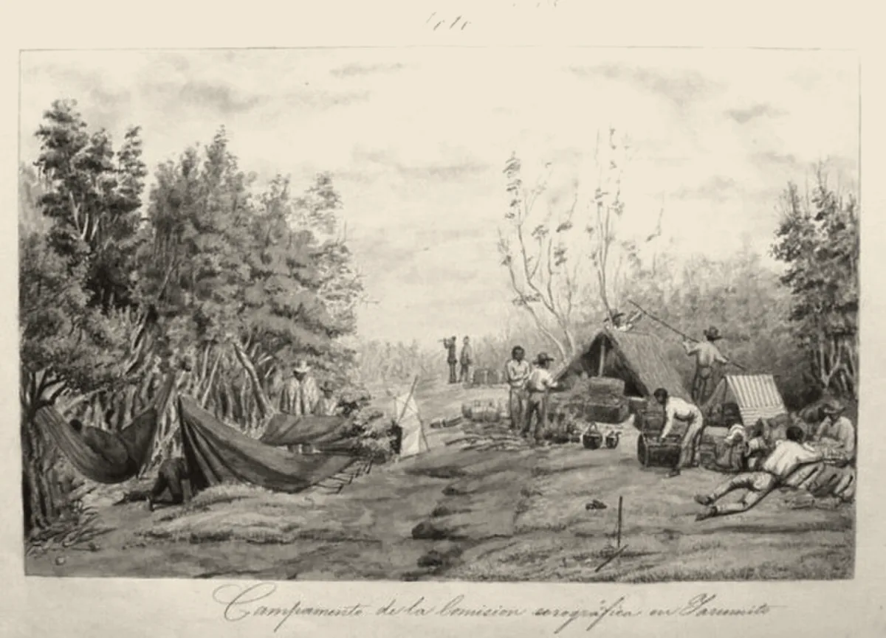

· Edición 66 · 4 min de lectura
El catastro debía estar al día en 2025; va cerca del 40%

El catastro debía estar al día en 2025; va cerca del 40%
Ver todo el tema, de principio a fin →
En pocas palabras. En 2019, el Gobierno prometió tener al día en 2025 el catastro, el inventario de cada predio, de quién es y cuánto vale; va cerca del 40%, y la meta se mudó a 2030. De él dependen los papeles de millones de campesinos y el predial de los municipios, pero actualizarlo de golpe dispara el impuesto: en abril hubo bloqueos. Bogotá lo actualiza cada año, a pasos cortos; el Congreso estudia topes al predial.
El dato curioso. En 1850, el italiano Agustín Codazzi empezó a recorrer el país con la Comisión Corográfica para medirlo y dibujarlo; el grabado es uno de sus campamentos. No alcanzó a terminar: murió de fiebre en 1859 en Espíritu Santo, el pueblo del Cesar que hoy se llama Agustín Codazzi. En 1950, el instituto que hace los mapas y el catastro tomó su nombre.
Qué pasa. En abril, campesinos de Lebrija, Santander, bloquearon la vía a Barrancabermeja. Manuel, que cultiva cítricos en la vereda Puyana, contó a Vanguardia que su finca figura con un avalúo de 400 millones de pesos. «Nos convirtieron en multimillonarios en un papel», dijeron.
El alza venía del IGAC, el Instituto Geográfico Agustín Codazzi, que ajustó los avalúos rurales de 527 municipios. Hubo bloqueos en al menos siete departamentos. El 6 de noviembre, el gobernador de Santander pidió al presidente revocar la actualización en unos 40 municipios.
Con el catastro se cobra el predial, se titulan tierras y se sabe qué es baldío, de la Nación.
Fuente: DNP (Conpes 3958 y 4204) e IGAC
Ver datos
| % | |
|---|---|
| 2018 | 5,7 |
| Fin de 2024 | 26,8 |
| Enero de 2026 | 38,9 |
| Julio de 2026 | 41,3 |
Lo que cambia en 10 a 50 años: si se cumple la nueva meta del IGAC, en 2030 se sabría quién es dueño de qué en todo el país. Hoy, 53 de cada 100 predios rurales serían informales, según la Unidad de Planificación Rural (UPRA, 2019).
Eso pesa por generaciones: en Buenos Aires, las familias que recibieron escrituras invirtieron más en sus casas y sus hijos estudiaron más, según un estudio de 2010.
¿Por qué pasa?
- El avalúo se queda quieto. La ley pide que valga al menos 60% del precio comercial; en 905 municipios no llegaba al 19%, según Diego Carrero, exsubdirector del IGAC. Quien tiene mucha tierra no tiene prisa.
- Y luego salta. El costo político llega de inmediato; los títulos y el recaudo, años después. Así, la meta se corre.
Marzo de 2019
Promesa: 60% en 2022 y 100% en 2025
El Conpes 3958 parte de 5,7% del territorio actualizado.
2025Plazo incumplido
Llega el año del 100%
A comienzos de 2025, el IGAC reportaba 26,8% del territorio.
2026Plazo incumplido
Nueva meta: 70%
La fijó el Plan de Desarrollo 2022-2026. En julio, el IGAC reportaba 41,3%.
Abril de 2026
Bloqueos por el predial
El IGAC permitió moderar las alzas y el Gobierno abrió mesas regionales.
Agosto de 2026Pendiente
Otra vez: 70% en 2028 y 100% en 2030
Lo plantea el nuevo modelo catastral del IGAC, con actualización permanente.
Fuente: DNP (Conpes 3958 y 4204); IGAC; Vanguardia
El patrón. Lo que se corrige una vez cada veinte años llega como castigo; lo que se ajusta un poco cada año apenas se nota.
¿Alguien lo ha resuelto? Bogotá actualiza todos los años, desde 2011, sus predios urbanos. Para 2026, su valor catastral subió 2,9%: subidas pequeñas, no saltos.
Ruanda registró más de 10 millones de parcelas, casi todo el país, en menos de cinco años y a unos 6 dólares cada una, con medición barata y las comunidades marcando linderos. Según el Banco Mundial, las mujeres casadas ganaron derechos sobre la tierra.
Pero ojo.
- Un registro también envejece. En Ruanda, años después, casi ninguna parcela no residencial tenía una venta registrada, según el IGC, un centro de investigación.
- Al día no es bien hecho. El director del IGAC admitió que la actualización rural podía tener errores.
Lo que ya habíamos contado. El 29 de septiembre contamos cuánto cambiaría el predial de Villa Campestre si pasa a Barranquilla (ver esa edición). Hoy, el inventario detrás de esas cuentas.
Qué hacer con esto
Para ir pensando. Si tiene finca o lote, el avalúo decide su predial y pesa al vender o heredar.
Cómo prepararse. Busque el avalúo en el recibo del predial; si el área o el uso están mal, reclame con escrituras o planos. (Conocimiento general.)
Ojo con el cuento. «Congelar el avalúo protege al campesino.» También protege a quien tiene mucha tierra avaluada muy por debajo de su precio. Pregunte quién paga menos.
Qué podríamos exigir. Ajustes pequeños y frecuentes, como en Bogotá, no un salto cada veinte años.
Dos lecturas
Las dos posturas sobre el tema, en su mejor versión
Actualizar, con escalones. Un catastro viejo hace que pague menos quien más tiene y deja sin papeles al campo. Los topes y las alzas graduales protegen al pequeño propietario sin congelar el inventario.
Primero corregir, después cobrar. Avalúos calculados desde una oficina, con errores admitidos, no pueden convertirse en cobros. Antes hay que revisar predio por predio y dejar que el dueño reclame.
Quién decide y cuándo
Quién decide. La Presidencia y el IGAC, sobre Santander; el Congreso, sobre los topes al predial; los concejos, sobre las tarifas.
Cuándo. Sin fecha. Santander pide revisar antes del 31 de diciembre; el 15 de noviembre se entregan las bases del Plan de Desarrollo.
Cómo participar. Quien crea que su avalúo está mal puede pedir la revisión al gestor catastral. (Conocimiento general.)
Seguimiento de la decisión
Pendiente · sin fecha fija
Presidencia de la República, con el IGAC y el Departamento Nacional de Planeación: Responder la petición del gobernador de Santander de revocar la actualización catastral rural que cuestionan cerca de 40 municipios del departamento y aplicar alzas graduales mientras se revisan los avalúos.
Pedido el 6 de noviembre de 2026, según Vanguardia. El gobernador pide que la revisión termine antes del 31 de diciembre de 2026 para que rija en 2027; no es un plazo oficial. Al 13 de noviembre no encontramos respuesta del Gobierno.
Pendiente · sin fecha fija
Congreso de Colombia: la Comisión Sexta del Senado y la Cámara de Representantes: Decidir si aprueba alguno de los proyectos que ponen topes al alza anual del impuesto predial, entre ellos el 073 de 2026 Senado, que limitaría el alza a la inflación en los predios ya actualizados durante ocho años.
Hay al menos tres propuestas radicadas desde julio de 2026, con topes distintos (la inflación, 12% o 15%). No encontramos fecha de debate. Las sesiones ordinarias del semestre terminan el 16 de diciembre.
Pendiente · plazo:
Gobierno nacional: el Departamento Nacional de Planeación (DNP): Entregar al Consejo Nacional de Planeación las bases del Plan Nacional de Desarrollo 2026-2030, donde se sabrá si mantiene la meta del IGAC de tener todo el país con el catastro al día en 2030.
El gabinete respaldó las bases el 12 de noviembre, según Semana e Infobae. No sabemos si incluyen una meta de catastro.
La paradoja del día
Lo más absurdo de la edición, en dos líneas
El instituto que debe actualizar el catastro lleva el nombre de un cartógrafo que murió sin terminar de medir el país. Ciento sesenta y siete años después, el país tampoco ha terminado, y la nueva fecha es 2030.
Para conversar
La pregunta. ¿Preferiría un predial que sube un poco cada año o uno que se queda quieto veinte años y después salta?
Para leer más
Libros para seguir con el tema
Dibujar la nación. La Comisión Corográfica en la Colombia del siglo XIX, de Nancy P. Appelbaum (Ediciones Uniandes y Fondo de Cultura Económica, 2017; traducción de Juan Manuel Pombo). Cuenta cómo Codazzi y sus dibujantes midieron y retrataron el país, y qué idea de nación quedó en esos mapas y láminas.
El misterio del capital, de Hernando de Soto (El Comercio, Lima, 2000; traducción de Mirko Lauer y Jessica McLauchlan). Un economista peruano sostiene que los pobres tienen bienes, pero sin papeles no pueden usarlos como capital. Su tesis es influyente y discutida: el estudio de Buenos Aires encontró poco efecto en el crédito.
¿Le interesa ver las fuentes?
Todos los documentos y datos que usamos
39 fuentes: 2 académicas, 12 oficiales, 2 de datos, 4 de organizaciones, 15 de prensa, 4 de referencia.
- Prensa Vanguardia (10 de abril de 2026). «Nos convirtieron en multimillonarios en un papel»: campesinos de Lebrija explican por qué no levantan el paro
- Prensa Vanguardia (14 de abril de 2026). Ocho claves para entender el paro campesino y las alzas de los avalúos catastrales
- Prensa El Colombiano (abril de 2026). Paro campesino por avalúos catastrales: qué pasó, por qué subió el predial y qué viene tras los acuerdos
- Prensa El Tiempo (abril de 2026). La actualización catastral que ha desatado protestas en Colombia: este es el impacto que puede tener en el impuesto predial
- Prensa Agencia PI (abril de 2026). IGAC permite ajustar incrementos del avalúo catastral en 2026: claves de la nueva resolución
- Prensa Noticias RCN (abril de 2026). Director del IGAC admite que la actualización del avalúo catastral en zonas rurales podría presentar errores
- Oficial Departamento Nacional de Planeación (16 de abril de 2026). Gobierno Nacional define cronograma y canales oficiales para mesas regionales sobre Catastro Multipropósito
- Prensa Vanguardia (6 de noviembre de 2026). Gobernador de Santander pide al presidente De la Espriella la revisión de la actualización catastral
- Prensa El Frente (noviembre de 2026). Gobernador de Santander le pide a De la Espriella revisar avalúo del catastro rural
- Oficial Defensoría del Pueblo (noviembre de 2026). 10 años del Acuerdo Final de Paz
- Oficial Departamento Nacional de Planeación, documento Conpes 3958 (marzo de 2019). Estrategia para la implementación de la política pública de catastro multipropósito
- Oficial Instituto Geográfico Agustín Codazzi (IGAC), comunicado (enero de 2025). Colombia avanza en la implementación del catastro multipropósito: 26,8% del territorio nacional actualizado es la cifra que reporta el IGAC para 2025
- Oficial Departamento Nacional de Planeación, documento Conpes 4204 (17 de julio de 2026), copia de Camacol. Declaración de importancia estratégica del proyecto de inversión Actualización y Gestión Catastral Nacional
- Oficial Instituto Geográfico Agustín Codazzi (IGAC), 2026. IGAC da a conocer los principales resultados de su gestión 2022-2026 durante el proceso de «empalme ante el pueblo»
- Oficial Instituto Geográfico Agustín Codazzi (IGAC), comunicado (agosto de 2026). El IGAC presenta el Nuevo Modelo de Gestión y Operación Catastral 2026-2035
- Prensa El Nuevo Siglo (2026). Catastro Multipropósito, una meta «colgada» para organizar el territorio
- Oficial Agencia Nacional de Tierras, Resolución 382 de 2021 (cita el índice de informalidad de la UPRA). Resolución No. 000382 de 2021
- Datos Unidad de Planificación Rural Agropecuaria (UPRA). Indicador de informalidad en la tenencia de la tierra en Colombia
- Organización OCDE, publicada por el DNP. OECD Rural Policy Reviews: Colombia
- Prensa El Colombiano (15 de abril de 2026). ¿Por qué Antioquia no protestó por alzas del predial, mientras otras regiones estaban bloqueadas?
- Oficial Diego Carrero, entonces subdirector general del IGAC, Congreso de catastro (2024). Desafíos en la captura del valor del suelo
- Oficial IGAC, resolución de valores de Agua de Dios (2025), que cita la Ley 1450 de 2011. Resolución 25-000-0107-2025
- Datos Unidad Administrativa Especial de Catastro Distrital de Bogotá (marzo de 2026). Censo Inmobiliario de Bogotá, vigencia 2026
- Oficial Alcaldía de Bogotá (2026). ¡Bogotá se valoriza! Catastro reporta 945 billones y aumento del 2,9%
- Organización International Growth Centre (IGC). Rwanda land tenure regularisation
- Organización VoxDev (2026). Land reform lessons from Rwanda's success
- Académica Ali, Deininger y Goldstein, Banco Mundial, documento de trabajo (2011). Environmental and Gender Impacts of Land Tenure Regularization in Africa: Pilot Evidence from Rwanda
- Académica Galiani y Schargrodsky, Journal of Public Economics (2010), ficha de la Universidad de Maryland. Property Rights for the Poor: Effects of Land Titling
- Prensa Ámbito Jurídico (2026). Limitarían incremento del impuesto predial al IPC
- Organización Instituto Nacional de Contadores Públicos (agosto de 2026). Se propone un límite del 12% al incremento anual del impuesto predial
- Prensa Pulzo (2026). Uribe propone proyecto para frenar el avalúo catastral e impuesto predial cambiaría en Colombia
- Prensa El Heraldo (5 de octubre de 2026). Consejo de Estado tumba regla que permitía aumentos desmesurados al impuesto predial
- Prensa Semana (noviembre de 2026). Gobierno logra respaldo unánime del gabinete a las bases del Plan Nacional de Desarrollo: ¿qué viene ahora?
- Prensa Infobae (12 de noviembre de 2026). De la Espriella recibió respaldo de sus ministros para ejecutar el Plan Nacional de Desarrollo 2026-2030, pero hay críticas a las cifras económicas
- Oficial Instituto Geográfico Agustín Codazzi (IGAC). Hechos relevantes de la historia
- Referencia Biografías y Vidas. Agustín Codazzi
- Referencia Sociedad Geográfica de Colombia. Datos anecdóticos de la muerte de Codazzi
- Referencia Biblioteca de la ESAP (ficha del libro). Dibujar la nación: la Comisión Corográfica en la Colombia del siglo XIX, de Nancy P. Appelbaum
- Referencia Universidad de El Salvador, catálogo de biblioteca (ficha del libro). El misterio del capital: por qué el capitalismo triunfa en Occidente y fracasa en el resto del mundo, de Hernando de Soto
Glosario
Las palabras técnicas, explicadas
- Catastro: el inventario oficial de los predios de un país: dónde están, cuánto miden, de quién son y cuánto valen.
- Catastro multipropósito: un catastro que sirve para más que cobrar impuestos: también para titular tierras, planear el territorio y proteger bosques.
- Avalúo catastral: el valor que el catastro le da a un predio. Sobre él se calcula el predial.
- Impuesto predial: el impuesto que cobra cada municipio a los dueños de predios. Es una de sus principales fuentes de dinero propio.
- IGAC: Instituto Geográfico Agustín Codazzi, la entidad nacional que hace los mapas oficiales y el catastro donde no hay otro gestor.
- Gestor catastral: la entidad que lleva el catastro de un municipio: el IGAC, una gobernación, un área metropolitana o la propia alcaldía.
- Baldío: tierra que pertenece a la Nación y que solo puede entregarse a quien cumpla los requisitos de la ley.
- Predio informal: uno que alguien ocupa o trabaja sin un título de propiedad completo y registrado.
- Conpes: documento de política del Consejo Nacional de Política Económica y Social. Orienta al Gobierno, pero no es una ley.
Nota metodológica
Cómo se hizo esta edición y qué no pudimos verificar
El horizonte. ¿Cambia el rumbo de cómo vive la gente, en Colombia o en el mundo, dentro de 10 a 50 años? Sí. Saber quién es dueño de qué tierra y cuánto vale decide, por generaciones, si un campesino puede heredar, vender o defender su finca, si los municipios tienen dinero propio y si se puede vigilar la tierra de la Nación. La evidencia: la serie oficial del área con catastro al día (5,7% en 2018, 26,8% a fin de 2024, 38,9% en enero de 2026 y 41,3% a mediados de 2026), la proyección del IGAC de llegar a 100% en 2030, el índice de informalidad de la UPRA y el estudio de Galiani y Schargrodsky sobre los efectos de la titulación a lo largo de una generación.
Entra por la puerta del nudo, y es estructural. Cumple las cuatro condiciones: persiste (tres metas incumplidas desde 2019); tiene un mecanismo (avalúos que se quedan quietos y luego saltan, con un costo político inmediato y un beneficio lento); alguien lo puede cambiar (la Presidencia, el IGAC, el DNP, el Congreso y los concejos), y causa daño comprobable (53 de cada 100 predios rurales serían informales y cientos de municipios cobran sobre avalúos muy por debajo del precio). Si no se desata, sigue afectando a millones durante décadas. La puerta de entrada es la petición del gobernador de Santander (6 de noviembre) y el balance de la Defensoría por los diez años del Acuerdo de Paz (11 de noviembre), que dice que en enero solo 41,32% del territorio tenía el catastro al día, frente a la meta de 70%. La semana ya tenía clima, energía, medicina e inteligencia artificial; este tema suma instituciones y tierra, y el primer nudo de la semana, pero lo elegimos por puntaje.
Revisamos el archivo: el catastro solo apareció de paso en la edición de Villa Campestre (29 de septiembre), sobre el predial. La tierra del Acuerdo de Paz estuvo en los descartes del 11 y el 12 de noviembre.
Puntaje. De 1 a 3 en cada criterio; peso en la vida y horizonte valen doble (máximo 24). Solo entra un tema con horizonte 3.
| Tema | Puerta | ¿Cambia el rumbo en 10 a 50 años? | Alcance | Peso | Horizonte | Cercanía | Margen | Mirada | Total | Resultado |
|---|---|---|---|---|---|---|---|---|---|---|
| Catastro al día: la promesa que cambia de fecha | nudo | Sí: quién es dueño de qué tierra, cuánto vale y con qué se financian los municipios, por generaciones | 3 | 2 | 3 | 3 | 3 | 3 | 22 | Elegido (edición 66) |
| Diez años del Acuerdo de Paz: la tierra para el campo | nudo | Sí: quién es dueño de la tierra y cómo se vive en el campo por décadas | 3 | 3 | 3 | 3 | 2 | 1 | 21 | Cifras de entrega que no cuadran; en todas las portadas |
| Presupuesto global de carbono 2026 (mundo) | fondo | Sí: sería el comienzo del descenso de las emisiones fósiles | 3 | 2 | 3 | 2 | 1 | 2 | 18 | Tercer tema de clima y energía de la semana |
| Línea 2 del metro de Bogotá | fondo | Sí: cómo se moverá la ciudad por décadas | 2 | 2 | 3 | 3 | 2 | 1 | 18 | Sin adjudicación todavía |
| Edición genética de una sola dosis (CTX310, mundo) | fondo | Sí, si se confirma: tratamientos de una vez para enfermedades crónicas | 2 | 3 | 3 | 1 | 1 | 2 | 18 | Diez pacientes; muy temprano |
| Informe mundial de tuberculosis de la OMS (mundo) | fondo | No: confirma una mejora lenta ya conocida, sin cambio de rumbo | 3 | 3 | 2 | 2 | 1 | 2 | 18 | No pasa el horizonte |
| Perspectivas de la migración de la OCDE (mundo) | fondo | No: la caída de los flujos de un año es coyuntura | 3 | 2 | 2 | 2 | 1 | 2 | 16 | No pasa el horizonte |
En el tema elegido, el peso vale 2: toca el ingreso y los derechos de propiedad, no la vida o la salud de forma directa. El margen vale 3: hay una petición pendiente ante la Presidencia, proyectos de ley en el Congreso, las bases del Plan de Desarrollo esta semana y algo concreto que cada propietario puede hacer. La mirada vale 3: la prensa contó los bloqueos como un pleito por impuestos, pero casi nadie los conectó con la promesa incumplida ni con lo que el país deja de saber. El Acuerdo de Paz pesa más en la vida, pero sus cifras de tierra siguen sin una cuenta oficial común. Ningún otro tema llega a 19 con horizonte 3 y un hecho nuevo, así que hoy hay una sola edición.
Hicimos unas 60 búsquedas en español e inglés. No pudimos abrir los documentos completos (ni los Conpes, ni el balance de la Defensoría, ni los proyectos de ley); trabajamos con resúmenes, comunicados y resultados de búsqueda. De 39 fuentes, 23 no son de prensa.
Quedó sin verificar o con límites:
- Las cifras del área con catastro al día no coinciden del todo. El Conpes 4204 dice 38,9% al 1 de enero de 2026; la Defensoría, 41,32% en enero de 2026; el informe de empalme del IGAC, 41,34% (lo fechamos a mediados de 2026 por El Nuevo Siglo, que lo ubica en julio). Por eso escribimos «cerca del 40%». La cifra de 2018 es la línea de base del Conpes 3958 (5,68%), y la de fin de 2024, del comunicado del IGAC de enero de 2025.
- La meta de 70% en 2026 es del Plan Nacional de Desarrollo 2022-2026, según el Conpes 4204; la de 70% en 2028 y 100% en 2030, del nuevo modelo del IGAC (agosto de 2026). El nuevo Gobierno no ha dicho si la mantiene.
- Los 905 municipios con avalúos por debajo de 19% del valor comercial son una cifra de Diego Carrero, presentada en 2024 cuando era subdirector del IGAC y repetida en El Colombiano en 2026; otra nota lo cita con 952 municipios. El piso de 60% viene de la Ley 1450 de 2011, como lo citan las resoluciones del IGAC.
- El 52,7% de predios rurales presuntamente informales es el índice de 2019 de la UPRA, citado por la Agencia Nacional de Tierras y la OCDE; la versión de 2020 da 52,0%. Es una estimación con información de catastro y registro, no un conteo predio por predio.
- Las protestas: los medios hablan de entre siete y nueve departamentos. La resolución que las detonó es la 2057 de diciembre de 2025; el IGAC la modificó con la 0027 y la 0384 de 2026. Del caso de Manuel solo tenemos lo que publicó Vanguardia.
- La petición del gobernador la conocemos por Vanguardia y El Frente; no vimos la carta.
- Los proyectos sobre el predial: Ámbito Jurídico describe el 073 de 2026 del Senado (alza limitada a la inflación en predios actualizados); el tope de 12% es de otro proyecto, de la Cámara, y el de 15%, de una propuesta del Centro Democrático. La decisión del Consejo de Estado la conocemos por El Heraldo.
- Ruanda: las fuentes dan entre 5 y 7 dólares por parcela y entre 10 y 11,3 millones de parcelas; usamos «más de 10 millones» y «unos 6 dólares». La frase sobre las ventas que no pasan por el registro resume el dato del IGC: menos de 0,15% de las parcelas no residenciales tenían un traspaso registrado. La evaluación de las mujeres es del piloto, con datos de 2011.
- Bogotá actualiza cada año desde 2011, según su Censo Inmobiliario 2026, que dice además que desde 2010 actualiza de forma permanente todos los predios urbanos.
- El dato curioso: la fecha y el lugar de la muerte de Codazzi vienen de fuentes de divulgación y de la Sociedad Geográfica de Colombia; el año del nombre del IGAC, de la historia oficial del instituto.
El grabado es un dibujo de Carmelo Fernández, de 1850, con el campamento de la Comisión Corográfica en Yarumito; Wikimedia Commons lo describe como Agustín Codazzi y sus colaboradores en la provincia de Soto (hoy Santander) y lo trae en dominio público. Lo bajamos al primer intento.
El libro: ninguno de los dos está en Santo & Seña (buscamos por título, autor y tema en su catálogo), así que van sin enlace. Los datos de Dibujar la nación los tomamos de la ficha de la biblioteca de la ESAP y de reseñas académicas; los de El misterio del capital, de catálogos de bibliotecas universitarias.